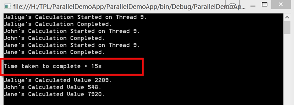
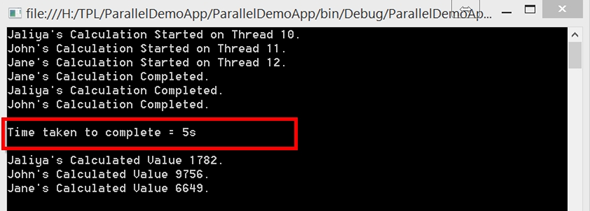

The Task Parallel Library (TPL) was introduced with .NET Framework 4 and it is the preferred way to write multi threaded and parallel code starting from .NET Framework 4. Basically TPL is a set of public types and APIs in the
System.Threading and
System.Threading.Tasks namespaces.
TPL is mainly categorized into following three categories,
In this wiki let's see what Data Parallelism is.
What is Data Parallelism
In simple Data Parallelism is concurrently accessing and performing
some heavy operation on items in a source collection or array (to be more specific here, any collection which implements
Enumerable or
IEnumerable<T>). The reason for highlighting
some heavy operation is, sometimes parallel operations can slow down or decrease the performance. So as a best practice, do use TPL only when it is necessary, in situations like where
you have hundreds of items to iterate and do some heavy processing on each of those item.
Let's create a console application and there let's have the following type which is “Employee”.
public class Employee
{
public int EmployeeId { get; set; }
public string FirstName { get; set; }
public int CalculatedProperty { get; set; }
<!--CRLF-->
public static List<Employee> GetEmployees()
{
return new List<Employee>()
{
new Employee(){EmployeeId=1,FirstName="Jaliya"},
new Employee(){EmployeeId=2,FirstName="John"},
new Employee(){EmployeeId=3,FirstName="Jane"}
};
}
}
Here GetEmployees() is a helper method which will return some data.
Now let's have a method where we are passing a Employee, and the method will do some calculation and will assign the calculated result to CalculatedPropery of Employee.
static Random oRandom = new Random();
<!--CRLF-->
static void ProcessEmployee(Employee employee)
{
// showing the current thread which the process runs in
Console.WriteLine(string.Format("{0}'s Calculation Started on Thread {1}.", employee.FirstName, Thread.CurrentThread.ManagedThreadId));
// to demonstrate a long operation, I am putting a thread sleep
Thread.Sleep(5000);
// getting a random number to make it look nice
employee.CalculatedProperty = oRandom.Next(0, 10000);
Console.WriteLine(string.Format("{0}'s Calculation Completed.",
employee.FirstName));
}
<!--CRLF-->
Here let's put a Thread.Sleep for 5 seconds to demonstrate time consuming operation and setting up a random number for CalculatedPropery of Employee (just to demonstrate).
Now let’s move into the Main method.
static void Main(string[] args)
{
// stopwatch to get the time taken to complete
Stopwatch watch = new Stopwatch();
watch.Start();
<!--CRLF-->
var employeeList = Employee.GetEmployees();
<!--CRLF-->
// for each employee, do the processing
foreach (var item in employeeList)
{
ProcessEmployee(item);
}
<!--CRLF-->
// process completed
// stop the watch and print the elapsed time
watch.Stop();
Console.WriteLine(string.Format("\nTime taken to complete = {0}s\n",watch.Elapsed.Seconds.ToString()));
// just printing the result
foreach (Employee employee in employeeList)
{
Console.WriteLine(string.Format("{0}'s Calculated Value {1}.",employee.FirstName,employee.CalculatedProperty));
}
Console.ReadLine();
}
<!--CRLF-->
Here first we have created a Stopwatch to get the time taken to complete. Then we are getting a List of employees and for each employee we are doing the heavy operation. After it’s completed, stopping the watch and printing
the time took to complete. And finally printing the result (it’s not much important anyway).
So this is the output.
|  |
| Output : Thread.Sleep() |
OK, a neat output. Started on the first employee, completed his processing, moved to the second, and so on and so forth. So if to process a single item needs 5 seconds, to process 3 items you will need 15 seconds (a simple math). Everything is happening on
the same thread as usual.
But what if we process all these 3 items in parallel? Then the amount of time taken should be less right? Let’s use Data Parallelism and find out what the result is. let's modify the above code. Instead of doing a
foreach on employee list, let's use
Parallel.ForEach.
Here is the code modified.
static void Main(string[] args){
<!--CRLF-->
// stopwatch to get the time taken to complete
Stopwatch watch = new Stopwatch();
watch.Start();
var employeeList = Employee.GetEmployees();
// putting a Parallel.ForEach in employee list
Parallel.ForEach(employeeList, e => ProcessEmployee(e));
// process completed
// stop the watch and print the elapsed time
watch.Stop();
Console.WriteLine(string.Format("\nTime taken to complete = {0}s\n",watch.Elapsed.Seconds.ToString()));
<!--CRLF-->
// just printing the result
foreach (Employee employee in employeeList)
{
Console.WriteLine(string.Format("{0}'s Calculated Value {1}.",employee.FirstName,employee.CalculatedProperty));
}
Console.ReadLine();
}
<!--CRLF-->
As you can see, we don’t have a
foreach on employee list, and instead we do have a
Parallel.ForEach. Now let’s go ahead and run this and see the result.
|  |
| Output : Task.Delay() |
So let’s examine the printed messages from the top. First employees’ calculation is started on Thread
10. In the same time, processing of other employees has been started on different threads. They have completed processing on different order (not a problem there). And amazingly time taken has been reduced to 5 seconds.
So there is something different from the previous run. What’s is happening here is, when we are using
Parallel.ForEach, the given action is happening on separate threads providing concurrency.
Something important to note here. When we mean separate threads, in a situation like where you have thousands of items in the collection, and when you use
Parallel.ForEach, the framework will not spawn thousands of records.
According to MSDN,
The .NET thread pool adapts dynamically to changing workloads by allowing the number of worker threads for parallel tasks to change over time. At run time, the system observes whether increasing the number of threads
improves or degrades overall throughput and adjusts the number of worker threads accordingly.
In simple, when
Parallel.ForEach is partitioning the collection, whether to spawn a new thread is decided based on continually monitoring the work done by the threads allocated. If a operation is still going on and a thread is waiting around, the algorithm will spawn up
more threads and re partition the collection between them. Please note that in some cases you can specify the degree of parallelism too.
For more information,
{kind=link}
{kind=link}